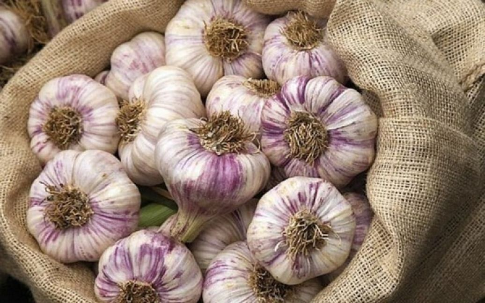

Чому потрібно їсти часник щодня: користь та шкода продукту

Користь та шкода часнику
Часник - це не тільки спеція, запашна приправа, але і корисний продукт для здоров'я. Чим корисний часник, які протипоказання для його вживання, скільки часнику потрібно вживати за день — у матеріалі ТСН.ua
Незважаючи на численні корисні ефекти плода при прийомі внутрішньо часник може викликати побічні ефекти.
Люди, які мають надмірну вагу, повинні знати, що часник посилює апетит.
Часник протипоказаний при таких захворюваннях, як виразка шлунка та дванадцятипалої кишки, гастрит, геморой, при захворюваннях нирок та печінки, епілепсія.
Не рекомендується вживати часник під час вагітності, а також годування груддю.
Не рекомендується вживати часник під час вагітності, а також годування груддю.
Часник може викликати алергічні реакції, тому алергікам слід бути обережними.
У поодиноких випадках часникові добавки можуть викликати головний біль, втому, втрату апетиту, м'язові болі, запаморочення та алергічні реакції, такі як напади астми або висипання на шкірі.
Прийом часнику може посилити дію препаратів для розрідження крові, що ще більше ускладнить згортання крові
Скільки часнику потрібно з'їдати за день
Часник на день можна з'їдати від половини до одного зубчика щодня. Вже в цій кількості міститься близько 3000-6000 мкг аліцину. Це речовина, яка утворюється при руйнуванні частинок часнику під час жування або приготування, і саме вона має бактерицидний ефект. Деякі дієтологи кажуть, що дорослі люди можуть з'їдати до 15 г часнику на добу або приблизно 4 зубчики. Для дітей це доза, звісно, ще менше. Однак слід пам'ятати, що надмірне вживання плода може спричинити негативні реакції в організмі.
Корисні властивості часнику виявляються тільки у свіжому вигляді, а після термічної обробки або сушіння часник втрачає всю свою користь та лікувальні властивості.